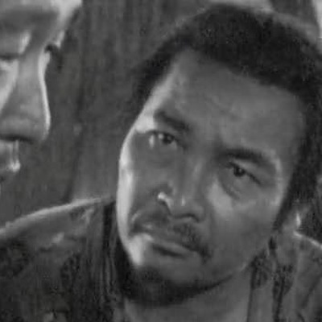

Диафильмы
Три фильма Куросавы, на которых построена игра
Герои
Нажмите на портрет
Семь самураев
七人の侍
1954

Камбэй
leader

Горобэй
tactician

Кюдзо
swordmaster

Хэйхати
jester

Сити-родзи
lieutenant

Кацусиро
apprentice

Кикутиё
outsider
Расёмон
羅生門
1950

Дровосек
witness

Тадзёмару
bandit

Масаго
wife

Такэхиро
samurai

Священник
listener

Простолюдин
cynic
Телохранитель
用心棒
1961

Сандзюро
ronin

Сэйбэй
silk boss

Уситора
sake boss

Уноскэ
gunslinger

Гондзи
innkeeper

Гробовщик
narrator